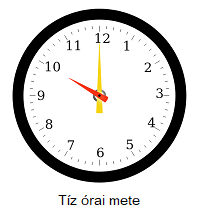

| DínóbácsiVadkanPumbameseGyulameseDareios kincseA dinoista Biblia öt perces meséiBazi nagy malac lagziVadkanökÜzenőfal |
Ezek a történetek tökéletesen gyermekbarátok, gyermekpártiak. A történetekben egyes végbemenő cselekvések bizonyítottan gyermekáldást előznek meg.
A történetekben nem olvasható trágár szó, valamint 18+ kategóriájú kontextus sem. Az összefoglaló dinoista történetek nyomán íródott. Az eredeti változat a fantázia feszítése és a vizuális ingercsokor érdekében többnyire képalapú. Az alábbi írások viszont szövegalapúak lesznek, de ez az élvezhetőségre NEM hat negatívan..
FIGYELMEZTETÉS: A cselekményben helyet foglal egy szereplő, melynek disznólkodása sokkot okozhat.
Szereplő megnevezése: Vadkan, VK, Gy.VK
Szereplő megjelenése: gyakori
A Dínóbácsi szál
Kérdezé az emberszülött, hogyan lőn Dínóbácsi. Válasz lévén itt valá e nemes história: Réges régen születé vala egy zöld dinoszaurusz, aki nem tett egyebet, mint töltötte fajtársaihoz hasonlatos életét, míg meg nem érkezé vala a Vadkan Szele, ami elpusztítván mindent a vidéken, kivéve ezen dinoszauruszt. Sem egy állat, sem egy mony [tojás] nem maradt épen és életben. És Dínóbácsi szólott:
– Nincs értelme az életemnek. Kell valaki, akivel...
Ezen gondolatával Dínóbácsi elvált az Édenkert fele s magával vette onnét Pannit. És Isten látta, hogy ez jó. Később Panni érezte is, hogy ez jó. De hamarosan érkezik egy lény, melyről mindenki látta, hogy minden, csak nem jó.
Érkezé vala nem más, mint a Vadkan, Dínóbácsi színe elé jő és fejet hajt, így lőn Dínóbácsi első tanítványa. Ám Vadkan oly súlyos hibát vétett, ami mindörökké valóságig a rovásán marad. Dínóbácsi haragra gerjedt és elhatározván, hogy büntetést adá Vadkan e súlyos vétkéért, megalkotá vala a lehető legpusztítóbb fegyvert. Így lőn a zöld vas, melyet a Dínóbácsi farokkard névre keresztelé az Úr. Dínóbácsi követé Vadkant, de a gyáva disznó menekült és bujkált.
Dínóbácsi kiépítette birodalmát. Meghódította a környező térséget, majd az egész világot. A föld alá egy alagút-házózatot fúrt, mellyel a világ számos pontjára gyorsan utazhat. Nedveit elvezető csatornákat is épített, melyek többnyire tartályokba vezetnek. Ez a föld alatti objektum sok más-más funkciót ellátó helyiséggel a D-erőd. Az emberek közt követői akadtak, ők lettek a dinoisták. Dínóbácsi munkát is vállalt, mert sok feladatban nagy hasznát vették az emberek.
Eljő még Dínóbácsi haragja, lesújtá még Vadkanra a hamari időkben. Eljövőben van már a Vadkanök, mely az istenek végzete lesz. Eljő majd a vész, mely Vadkant végső hibájára készteti. Eljő majd a végső csata, ahól Dínóbácsi lesújt a sertés bundájára. Eljő az esemény, mely megrengeti a földet és eljő a Vadkan utolsó Szele, mely a mindenséget elpusztítani hivatott.
A Vadkan szál
Ha tudja már az emberszülött, hogy lőn Dínóbácsi, bizonyosan kérdezé azt is, e csodás világba hogy lőn a Vadkan. A válasz az, hogy sehogy, mihelyt előbb lőn Vadkan, mint minden másegyéb. De többi e meséből hangozzon!
Kezdetben nem volt semmi. Aztán lőn a Vadkan. Aztán lőn a Vadkoca. Vadkan rövid időn belűl észre vévé vala. Vadkan odamégy az Ős Vadkocához és feltalála vala egy igen malac időtöltést: a malackodást. Vadkan nagyon kanos vala ezért megfogá vadkocát és malackodni kezdtek. Vadkan teljesítménye ekkor még föld és ég vala, szó szerint, hiszen úgy juttatá vala Vadkocát az egekbe, hogy közben Földé változtatá. Malackodásuk végén, mikor amen lőn Vadkan számára is, Vadkoca annyira vala felpumpálva, hogy bolygová vált vala. Így lőn a Föld. Egy malaca született, kit a Vadkan elkapott és őt is meg... Így lőn a Hold. Azután lőn a dinoszaurusz. Majd lőn a Vadkan Szele, mely okán a dinoszauruszok kipusztulva vala. Csak egy maradt: Dínóbácsi! Vadkan észrevevé vala, hogy Dínóbácsi nagyon kanos lőn. Tanítani próbálván vala. Ám ekkor látta, hogy e új teremtmény kanosabb vala nála, így megkérvén hogy:
– Taníts mester! – kérdé a Vadkan – Csak hagyd már abba! Fúj! – tette hozzá Vadkan, melyre válasz egy grrr formulájában érkezé vala
Vadkan nem szereté mesterét és mikor alkalma lőn rá, elárvulván őt és nehezen, de megszöké vala a D-erődből. Dínóbácsi elment a kovácsműhelybe és megalkotá vala a legpusztítóbb fegyvert mely nem más, mint a Dínóbácsi farokkard. Dínóbácsi követte a Vadkant, ám a gyáva disznó menekült és bújkált.
Dínóbácsi éppen (v)alagutat fúrt, mikor hall egy kiáltás fentről:
– Neked csak vadKAN vagyok!
Dínóbácsi feltört a magasba. Vadkant nagyon megijesztette... De sajnos megszökött a Vadkan Szelével. Dínóbácsi, hogy levezesse a ... kilökte az űrbe a másik, számára ismeretlen disznót. Vadkan elrepült egy erdő tisztására, ahol (látszólag értelmetlen okból) volt egy bika. Mikor földet ért, malackodni kezdtek. Vadkan tömni kezdte Gyulát. Gyula kevésbé lehetett hozzászokva a helyzethez, ugyanis nem tudta, hogy ellenkezéssel jobban járna, helyette türelmesen megvárta a malackodás végét. Vadkan meg csak tömte, tömte és tömte, míg amen nem lett neki. Akkor békén hagyta Gyulát, ezért észrevette, hogy nem is lett volna szüksége rá. Észrevett egy kondát KAN nélkül. Nem akarta, hogy túlnépesedés legyen, ezért szüksége lesz rengeteg cotton-ra. Ezeket ettől a bikától kellene kicsikarni. De mi legyen az ára? Eszébe jutott, mit tanított Dínóbácsi: Kanada=tehén. Tett egy ajánlatot, Gyula beleegyezett, így Vadkan boldogan tömhette a Vadkocákat. Pontosabban csak egy ideig volt érvényes a többes szám, egészen addig, míg meg nem ismerte Vadkoca69-et...
Egy hűvös nyári napon, Vadkan elindult a kondája felé és már ki is nézett magának egy kocát, mikor hátulról meglökte valaki. Megfordult. Egy másik koca volt, de nem ismerte Vadkan. Látványa gerjesztő volt Vadkan számára, mondhatni, a tökéletes koca. Vadkan rögtön meg akarta ismerni belső tulajdonságait is. Nagy örömére a koca azt mondta:
– Most én jövök a sorban. Hadd mutatkozzam be: Vadkoca69 vagyok.
– Röff...
Vadkoca69 elindult egy tisztás felé, kicsit messzebb a kondától, Vadkan csörtetett utána. Megfordult és hirtelen nekirohant Vadkannak, aki a hátára fordult a lendülettől és kövér léte miatt nem is igazán tudott visszafordulni. Ekkor Vadkoca69 ráfeküdt Vadkanra és megkezdték azt, ami a nevében is benne van. Ezt művelték napnyugtáig. Vadkoca69 megszólalt:
– A jó vaddisznó este keresi leginkább a makkot – mondta, majd elhelyezkedett úgy, hogy kizárólag azzal az egy dologgal foglalkozzon
Vadkan örült. Élvezte, hogy talált egy kocát, aki már túllépett az elavult disznószokásokon és igazi malackodásra vágyik. Mikor amen volt Vadkannak, Vadkoca69 a hirtelenségben hátra esett. Ekkor feltárulkozott Vadkan számára a hagyományos pumpálás lehetősége, amit nem hagyott ki. Természetesen Vadkoca69 sem állt ellen, élvezte, hogy kihasználják spontán pozícióját, és nem is változtatott helyzetén. Még annyit megkérdezett, hogy:
– Biztonságos?
– Igen...
Vadkan tömte, tömte és tömte. Ettől kitisztult a feje és észrevette, hogy valami figyeli a bokorból. Rossz előérzete támadt, de nem lassított. Sötétedett már és a disznóknak rossz a szemük, de vadkan végül kivette a körvonalakat. Szerencséjére nem az volt, akitől félt. Helyette az egész konda ott állt és nézte őket. Minden koca a nyálát csorgatta, melynek láttán Vadkan gyorsított a tempón, Vadkoca69 örömére. Vadkannak és kedvenc kocájának is amen volt, de a konda többi tagja csak ott állt vágyakozva. Ekkor Vadkoca69-nek új ötlete támadt: minden koca + Vadkan... Egyszerre... Vadkannak nem volt könnyű dolga, de a szuperbúgás élménye bőven kárpótolta. Napkeltekor hagyták abba, de hányadikon... Röviden fogalmazva a Gyurex egy idő után hatását vesztette, ezért néhány koca malacot szült, kant is. Mikor ezek a kanok ivaréretté nőttek, a konda akkor csatlakozott le, de ez nem volt probléma Vadkan számára, Vadkoca69 megmaradt neki. Ők ketten továbbra is malackodtak...
De minden jónak egyszer vége szakad. Egyik héten nem jött a heti adag. Az előző adag meg:
– Uííí, elfogyott?
Vadkan így már nem pumpálhatott Vadkoca69-cel. Így elment Kanadába és Gyula összes tehenét... Gyulát is ... akarta, de nem találta őt. Látott egy nagy vermet, de rajta látott egy nagy „D” betűt, így meg sem közelítette. Elment Afrikába Pumbához, de Dínóbácsi követte...
Pumbával volt egy régi, letisztázatlan ügyük, amit meg kellett oldania. Mikor megtalálta, kanosan rákiáltott, malackodást szítva:
– Pumba, játszuk le!
– Timon, gyere ide, pumpálás van – visított ijedtében Pumba – Hé, Timon pumpálás van!
Timon is megérkezett és Pumbát pumpálni kezdte. Azonban azt nem tudta, hogy ha Pumbát lefoglalja, Vadkan célpontja már ő lesz. Ez nem volt túlzottan kényelmes ilyen kis termetű állat számára. Timon a Pumbát pumpálja, Vadkan viszont Timont már karóba húzta. Timon cseppet sem élvezte ezt és a kíntól elengedte Pumbát. Ha Timon ezzel azt hitte, hogy Vadkan békén hagyja és csak Pumbával fog törődni, tévedett. Igaz, Vadkan már inkább Pumbát tömte, mint Timont, de még annyival sem foglalkozott, hogy Timont felszabadítsa a karóból. Inkább gyakorlatilag Gyurex helyett használta Timont. A malackodást Dínóbácsi szakította félbe. Vadkan még nem végzett, ezért fogta a TPPSZ-t és magával repítette őket a Vadkan Szelével. Dínóbácsi elment a vezetőséghez, de látta, hogy itt királyság van, élén az oroszlánnal, Mufaszával. Segítséget kért az ismeretlen terepen:
– Van itt egy körözött bűnöző, bizonyos Vadkan!
– Tudnék róla – válaszolta Mufasza
– A Vadkan Szelével jött – Dínóbácsi kissé mérgesen válaszolt Mufasza okoskodása miatt
– Fogadjunk! Ha én nyerek, játszunk egy mufasza fogót! Amúgy egy királlyal nem így kellene beszélni
– Én vagyok Eurázsia és Amerika kormánya Grrr... – licitálta túl Mufaszát, majd megbeszélték a hatalomátvételt.
Vadkan elrepítette Pumbát és Timont jó messzire A Rettenetes Dínóbácsitól. Így már tudtak volna malackodni, de Vadkannak jobb ötlete támadt. Egyedül kevés Dínóbácsival szemben és nem tud örökké menekülni, mert előbb-utóbb ARD rátalál. Vadkan be akarta szervezni őket a seregébe. Rendkívül értelmesen megszólalt:
– Álljatok mellém!
– Nem, mert ledisznóztál! – dacolt Pumba
– Jó, akkor játszunk egy meccset, ha én nyerek, az enyémek vagytok, ha ti nyertek, Pumba vadkannak hívlak és az enyémek vagytok. Uííí...
Vadkan kíváló képességekkel rendelkezik a kosárlabda terén, legalábbis ő ezt állítja magáról. Valójában a meccs abból állt, hogy megfújta a TPPSZ-t a Vadkan Szelével, ők pedig félájultan nézték, hogy Vadkan nagy komolyan elpattogtatja a labdát a palánkhoz és féltucat próbálkozás után bedobja a gyűrűn, ekkor veszi észra, hogy a saját gyűrűjébe dobta a labdát és Pumbáéknak szerzett pontot. Gyorsan korrigálni kezdte kis hibáját és a játékidő felénél tartva már vezetett is. Ekkor már nem kockáztatott több pontot szerezni (de ha valaki megkérdezi őt, 69-0 lett a végeredmény), inkább Pumbát és Timont fújta a Vadkan Szelével épp olyan dózisban, hogy mozdulni se bírjanak, de emlékezzenek a meccs eredményére. A vadkan nyert (életében először és utoljára). A TPPSZ aláírta a szolgálati szerződést, amire Vadkannak nagy szüksége volt, végre uralkodhatott valamin. Vadkan örül.
– Ezaz, végre, de mi csöpög itt? – Vadkan hirtelen esőre gondolt, amikor eszébe jutott, hogy zárt tében vannak.
– Bizonyára beázott – gondolta magában, mikor egy kövér csepp hullott túrókarimás orrára
A csepp azonban nem víz volt, fehér színe láttán Vadkan arra gondolt, mi is lehet ez, olyan ismerős... ekkor bekiáltott Pumba, jelezte, hogy események indultak el odakinnt:
– Valami van itt!
– Fúj!
– Grrr!
Vadkan rájött, mi közelít. Egy dologra tudott gondolni:
– MENEKÜLÉS!
Szerencséjére a TPPSZ feltartotta ARD-t, ezért el tudott szökni ismét a Vadkan Szelével. Céltalanult repkedett, gyorsan keresnie kellett egy jó helyet. Eszébe jutott, hogy még Dínóbácsi mondta neki, hogy Erdélyben sok koca található. El is ment hozzájuk és új kondát alapított ott. Azt viszont nem tudta, hogy Dínóbácsi kiképzett birkákat tenyészt Erdélyben...
DE EZ MÁR EGY MÁSIK TÖRTÉNET...
Pumbamese
Egyszer volt, hol nem volt, volt egyszer egy erdélyi legény, aki arra ért haza, hogy házába betörtek, szobáit feldúlták. Félve besurrant ajtaja helyén és a pincéjéből szűrődő furcsa hangokra lett figyelmes. Bekukucskált pincéje ajtaján. Odabenn két matalmas kan disznó malackodott egymással, melyek közül az egyik kitöltötte a pince felét (annak ellenére, hogy egy tágas, csarnokszerű raktárról van szó), melynek láttán a legény azonnal kirohant az épületből és tárcsázni kezdte a segélyhívót. Mikor a telefont felvették, köszönés nélkül kezdte mondani panaszát:
– Halljam a panaszát! – indított a segélyhívó
– Segítség! A házam pincéjében két vadkan malackodik! – ordította a telefonba a legény
– Odaküldjük a megfelelő embereinket – érkezett a nyugtatás némi gondolkodás után
Ezalatt a pincében Vadkannak éppen azzal a gonddal kellett élnie, hogy kanos:
– Azt mondod, nem elég nagy a legféltettebb gyémántom? 30 centis! – visította Pumbának, majd kanvesszejével felöklelve Pumbát hozzátette – Te ostoba disznó!
Utolsó mondata azonban nagy hiba volt. Mostmár Pumba is nagyon kanos lett.
– Te ledisznóztál? Te komolyan ledisznóztál engem? – ekkor felemelte hangját – Neked csak vadKAN vagyok! – mondta és felöklelte agyarával
Ekkor hirtelen megremegett a föld és vele együtt a ház is. Elkerülhetetlen volt a malackodás. Vadkan rávetődött Pumbára és súlyát kihasználva felül is tudott maradni. Lassan tömni kezdte Pumbát. Pumba nagyokat visított fájdalmában, kapálózott, de nem szabadult a hogzilla termete alól. A padló repedezett, a falak repedeztek. Vadkan csak tömte Pumbát, tömte, tömte, mellső patáival rátámaszkodott Pumba mellső patáira, hogy ne menekülhessen, de végül Pumba kiszabadult, most következik a visszavágó... A padló kis szakadékokkal határolt darabokra osztódott, a falról a vakolat hullott, az épület megállás nélkül, ritmikusan remegett, de ezt a disznók nem vették észre malackodásuk okán. Pumbának nem volt ideje megkerülnie Vadkant, így a szemközti nyílásánál kezdte tömni. Ez hiba volt. Vadkan megharapta Pumbát, nem is akárhol. Pumba felugrott a magasba és ezt kihasználva indult is Vadkan kunkorodó farka irányába. Landolt. Vadkan patája beszorult egy repedésbe, így nem tudott reagálni. Pumba nekiállt tömni a disznót. Vadkan visított, ugrálni próbált, de meg sem mozdult – hájával ellentétben – ezért tűrnie kellett a malackodás ezen szakaszát is. A mennyezetről egy nagyobb darab szakadt le. Pumbának sem volt könnyű dolga: figyelnie kellett, hogy vadkan bundája ne dörzsölje ki a bőrét, valamint a Vadkan szele folyton kitessékelte kanvesszejét. Egy hatalmas rengés rázta meg a pincét, egy hordó elszabadult és eltalálta Pumbát. Vadkan megszabadult. Indult Pumbához, a félájult disznót felhúzta és megpörgette. Pörgette, pörgette, Pumba meg csak forgott és hamar elszédült. A padlóból leszakadt egy darab, helyén Pumba egy tátongó lukat látott. Szédült és sajgott a hátsófele. Egy zöld oszlop homályát vélte látni meg egy pillanatig, némi törmelékkel körülvéve. Az oszlop végén valami patak forrása volt. Egy szemhunyás alatt azonban az oszlopnak már csak a helye maradt. Pumba hirtelen zsibbadást érzett hátul, Vadkan abbahagyta a malackodást. Ellökte magától Pumbát. Ekkor feltört újra az oszlop és Pumba látta, hogy ez valójában Dínóbácsi farka és neméppen a hátsó. Vadkan elrepült a Vadkan Szelével, Pumba is megrémült, mert amit eddig pataknak hitt, már a patáit is beterítette. Dínóbácsi ekkor farkával meglökte és elrepítette Pumbát a végtelenbe és tovább.
Gyulamese

Volt egy bika, Gyula. Akart száz tehenet, de nem jutott neki egy se, míg a Vadkannal nem találkozott, miközben szarvasteheneket cserkészett be. Egyszer éppen egy erdei tisztás szélén nőtt bokorból figyelte a szarvasteheneket, mikor az égből egy hatalmas vadkan zuhant, pont oda, ahol ő állt. Mikor Vadkan földet ért, hosszas malackodásba kezdtek. Gyula kárpótlásban részesült az eddigi szűkös idők után, ugyanis megkapta, amit kívánt: egy minőségi eggyéválást. A problémája mindössze annyi volt, hogy partnere nem egy tehén volt, hanem a Vadkan, aki Gyulát küldte passzív résztvevőnek és ez nem Gyula stílusa volt. Szerencséjére Vadkan végül befejezte a műveletet. Mikor abbahagyták a malackodást Vadkannak megtetszettek az erdő kocái és észrevette, hogy ebben a kondában nincs kan se. Ekkor Gyulához fordult:
– Menj Kanadába, ott ezerszámra találsz teheneket!
– Óhhh...
– De az információért cserébe kérek hetente ezer darab cottont, de Gyurexet, mert az a legjobb – mondta Vadkan, majd hozzátette – különben odamegyek és megdöngetlek
Gyula elment Kanadába és beállt tenyészbikának. Hamarosan megkétszereződött a tehenek száma. Nem volt más dolga, mint... A tehenek is élvezték Gyulát, de sajnálták, hogy egyszerre csak egyikükkel tud törődni. Kárpótlásukra szolgál, hogy ha soron következnek, igazi gyulai kolbász okozza katarzisukat. Jó volt Gyulának is, de túl szép volt, hogy ez igaz legyen...
Egyszer elfelejtette elküldeni a heti adagot Vadkannak, amivel nem is volt baj, amíg kitartott az előző, de aztán:
– Úííí, ELFOGYOTT?!
Vadkan elment Kanadába és haragból Gyula összes tehenét... Kezdetét vette a nagy malackodás. Ami biztos, hogy a tehenek nem sírják vissza ezt az élményt.
Gyulát egy fiatal hiúzpár mentette ki. A vermükbe mentették, amit Dínóbácsi adott nekik. A verem bejáratánál egy nagy zöld „D” volt olvasható, ezért Vadkan félelmében elkerülte. Azóta is teheneket keresgél Gyula. Alig talál, ezért miniszterelnök akar lenni, hogy bevezesse a tehénadót...
VÉGE
Dareios kincseés egy birkanyáj
Történt egyszer, hogy Vadkan a TPPSZ-szel együtt Dínóbácsi elől menekült Erdélybe, ahol tanulmányai szerint rengeteg koca volt. Ezért Dínóbácsi egy birkasereget képzett ki a közelben, hogy azok kíméletlen bánásmóddal kényesztessék Vadkant. Dínóbácsi ezen kívűl ismerte Vadkan egy titkát: egy fontos kincset őrizet a templomában. Ezt a kincset meg kell szereznie! Azonban ő neki nem volt ideje ezt megtenni, ezért egy hírdetést írt ki, hogy egy hősies csapat teljesítse ezt a küldetést. Azonban hiába várt, senki nem jelentkezett.
Lakott egy csendes falu tájékán egy macska, aki minden reggel körbejárta a falut és az egyik nap a szél a szeme elé sodort egy papírdarabot. A macska elolvasta.
SZEREZD MEG DAREIOS KINCSÉT!
Egy nemes küldetésre szólít ARD. Irány a dzsungel, melynek közepén vár egy templom tele kinccsel, ezt kellene leszállítani bőséges jutalomért cserébe. A feladat veszélyes, csapatban érdemes vállalni, felszerelést csak szagok és disznóveszély ellen biztosítunk! További információk jelentkezés után.
Jelentkezés: kéznyommal ellátott hírdetőlap a kuka mellé szépen feltekerve
Várható jutalom: nemesfém, drágakövek
Grrr... A macska hazavitte a lapot és megmutatta társainak. A pajtába érve ott is találta a csirkéket, a nyulat, a lovat és a kutyát. Utóbbi kettő éppen kártyázott, mikor a macska behozta a hírdetést. Megmutatta a többi állatnak és elhatározták, hogy szerencsét próbálnak. El is indultak a jelentkezésre. Letették a kuka mellé a papírt, majd otthon vártak a válaszra. Nem sokkal később egy csuklyás alak jelent meg zöld köntösben, melyet fehér öv tartott össze. A szerzet egy dinoista volt, aki elvezette a csapatot egy titkos alagút bejáratához, ami a közelben volt. A dinoista odaállt egy furcsa géphez, jó közel, valamit babrált a köntösével, majd egy szempillantással később egy járat fedele nyílt fel. A dinoista azt mondta, üljenek csak le a csónakba. A ló kereste a vizet, ahol csónak lehet, de a dinoista megmutatta, hogy a járat alján van a csónak, a burkolaton. Nem igazán értették, miért van ott a csónak és miért kell beleülniük, de engedelmeskedtek. Mikor mindenki elhelyezkedett, a dinoista megnyomott egy gombot és a csónakból szántalpak álltak ki. Ezutáb lökött egyet a csónakon és gyorsan még ő is belehuppant, mielőtt a csónak irdatlan sebességgel megindult volna a mélybe. Az állatok nem értették, mitől suhan így a jármű, de nem is törődtek vele, inkább az alagutat nézzték. Az cseppet sem volt kidolgozatlan. Beépített falak, néhol freskókkal, lámpák mindenütt, elágazások, máshol egyéb csónakok, melyekben dinoisták utaztak. Nem csak olyan csónakok voltak ott, amelyben ők is utaztak, láttak fedett csónakot, láttak tárolócsónakot, mely önmagát hajtotta és a legkülönbözőbb tárgyakat hordozta magában, láttak buszméretűt is, melynek 2 szintje volt láttak kis alma méretű acélkapszulákat, melyet egy ostorszerű szerkezet hajtott előre. Amivel viszont csak szerencsére csak egyszer találkoztak, az egyik kanyar után jött szembe velük, egy hatalmas uszály, markológépekkel és darukkal rakodva. A szállítmányt őrzők szaladgáltak fel-alá és egy kicsit másképp öltözködtek, mintha bokrok lombjait öltötték volna fel magukra. A járművel még gyorsabban suhant, látszott, hogy sietős a dolguk. Majdnem ütköztek is, de a csónakot vezérlő dinoista időben reagált és egy kart maga felé húzva, a csónak a cső falán, 90°-kal eldőlve folytatta az utat, megkerülve az uszályt. Mikor ismét egyenesen haladtak, a dinoista megnyomott egy 5-ös számú zöld gombot, ami a duda volt, jelezve az uszálynak elégedetlenségét. A ló is meg akarta nyomni a gombot, mert nem élvezte a hullámvasutat, ám helyette az alatta világító fehér gombot nyomta meg, aminek hatására a csónak hátsó részéből egy cső bukkant fel és egy furcsa anyagot lőtt ki magából az uszályra. A digitális panelen egy skála jelent meg, ami az erősséget szabályozta. A ló bosszúból beállította a legmagasabb értéket és a zöld, megerősítő gombra rányomva, olyan áradat zúdult ki a csőből, hogy mindent beterített, ami a csónak mögött volt és a csónak a hihetetlen sebességgel száguldani kezdett. A dinoista gyorsan rendet tett, majd leteremtette a lovat. Visszatolatott, hogy megmutassa, a hajtóanyag befedte a lámpákat és félhomály lett a járatban. Ezután elővett egy okostelefonhoz hasonló gépet és nyomkodni kezdte azt leolvasott egy adatot a csónak digitális paneljéről, majd befejezvé műveletet, szépen lassan leült. Öt percig vártak ott, amikor ugyanis kis fallikus gépek jelentek meg, ezeknek két, gömbölyű járólába volt, ahonnan egy rúd állt ki, melyből takarítószer lövellt a falra. A dinoista még be sem indította a csónakot, már le is mosták a falat. Indultak tovább. Egy percnyi utazás után egy nagy és forgalmas helyre érkeztek. Egy óriási hosszúkás barlang, két oldala tele volt kisebb és nagyobb útvonalakkal, melyeket fel- és lehajtók kötöttek össze, körforgalmakkal és leágazásokkal. A dinoista azonban a szakadék felé navigált, az állatok megrémültek, de ő csak nyugtatta őket. A szakadék szélén a dinoista behúzta a szántalpakat és a csónak belezuhant a szakadék alján hömpölygő folyóba. Ettől kezdve a lélekvesztő olyan gyorsan haladt, hogy már azt sem lehetett látni, merre haladnak, többeket émelygés fogta el. A dinoistán látszott, hogy kiismeri magát és pár perc múlva megrántotta a kart a bárkán és az nagyjából hangsebességgel fölfele indult meg, hogy egy pillanattal később megálljanak egy csarnok előtt. A dinoista adott a rosszullét ellen mindenkinek egy-egy fiolát, tele egy gyanús, fehér anyaggal. Mikor egyhajtásra megitták, rögtön jobban lettek. A csarnokban egy hatalmas kristálycsillár világította meg a sok dolgos dinoistát asztaluknál dolgozva, akik fél szemmel végigpillantották a jövevényeket. A dinoista a csarnok végén magasló kapukhoz sietett és az őr elé állt, aki egy rudat tartott a kezében és megvizsgált a dinoistán valamit, majd beengedte őket a kapun.
A kapu mögött egy idősebb, szakállas ember ült íróasztala mögött és amint meglátta a csapatot, rögtön félre állt, és beinvitálta őket.
– Gyertek elvtársak! Elmondom a lényeget! A feladat egyszerű: el kell mennetek Közép-Amerikába, és meg kell találnotok Vadkan templomát, ugyanis ott őrzik a térképet. A térképpel meg kell találnotok Dareios kincsét és azt el kell helyeznetek egy kuka mellett, mint a hírdetőlapot! A feladat veszélyes lehet háttértudás és felszerelés nélkül, azonban ha minden igaz...
Várt valamire. A mennyezetre tekintett, majd mikor felvillant a falon egy kis lámpa, egy finom permet hullott az állatokra.
– Remek, most már védettek vagytok Vadkantól. De! Szükségetek lesz egy kis háttértudásra.
Asztala mögé sétált, hang alapján kihúzott egy fiókszerűséget, majd szorosan a közelébe állva elfordított egy gúlát az asztalán és kis várakozás után, a mögötte lévő páncélozott szekrényajtó kinyílt. Láthatóvá vált a polc, melyen összefűzött papírok sorakoztak. A papírokat lehelyezte az asztalra, a csapat felé fordítva, ugyanis a lapokon ábrák is szerepeltek, amit meg akart mutatni. Biztonsági intézkedésként egy üvegfalat emelt a szent írások és a vendégek közé.
– Ááá, jobb lesz, ha idő szerint az elejétől kezdjük. – mondta, majd előre lapozott – Itt lesz jó. Tehát: „Kezdetben nem volt semmi. Aztán lőn a Vadkan...”
A történet után a kutya türelmetlenül megkérdezte:
– Meghallgattuk ezt a sok hülyeséget, de arra vagyok kíváncsi, mi lesz a jutalom?
– Valóban, valóban. Bár Vadkan fejében üressség honol, nehéz küldetésre küldünk, melyért cserébe méltó jutalom vár reátok.
– De mi az?!
– Sokféle jutalom van. Az első és legfontosabb, Dínóbácsi kegye, ez azt jelenti, hogy felkerültök a fehér listára, tiszteletbeli rangot kaptok a D-seregben, hitelesek vagytok a bulikra és a többi. A fizikai jutalmat előlegként kapjátok meg most. Beengedünk titeket a kincstárba, meghempergőztök az aranyban, drágakövekben és ami reátok ragad, a tiétek. Ha nem volna elégséges számodra a jutalom, fajtatiszta szukákat is kereshetünk neked.
Bementek a kincstárba. Az tele volt zöldarannyak, smaragddal, jádéval és minden egyébbel. Meghempergőztek benne és kinccsel felfuttatva jöttek vissza, ami rájuk ragadt, elpostázták a pajtába. A dinoista Elvezette őket az alagutakon át egészen az amerikai partig. Itt kezdték meg útjukat.
A menetelő állatok roppant lusták és gyengék voltak. Otthon nem kellett össze-vissza szaladgálni de itt kutyagolhattak volna. A ló azonban ezalól kivétel volt, ugyanis hozzászokott már a megerőltető feladatokhoz. Ezt használták ki a többiek. A macskától a nyúlig mindenki utas volt szegény lovon, aki már a málháktól mintha egy lakótornyot cipelt volna magán. A folyton kipihent utasok bosszankodtak rajta, de bizony csődör barátunk emiatt gyakran igényelt szüneteket, amiket ki is használt, már húzta is a lóbőrt :)
Az egyik ilyen megálló egy erdő mellett volt, ahol egy ágy állt, mellette egy medve, aki szemláttomást gondolkodot valami számára fontos dolgon. Vakargatta a fejét, nézelődött az ágy körül, valamit nem értett. A kakas kíváncsisága volt a legnagyobb, szóba elegyedett a medvével, aki csak annyit mondott, hogy valaki megtréfálta és nyomokat keres. Amíg a ló lepihent, a többiek segítettek a medvének és hamar találtak egy alig olvasható írást az ágy lábába vésve: "A Vadkan itt járt". Rögtön utána a medve észrevett egy papírdarabot az ágy alatt. Felemelte és miután elolvasta, dühösen összegyűrte és visszahajította a földre. A kakas újjabb kérdésére a haragtól csak annyit tudott válaszolni, hogy ismeri a dalocskát. A macska is kíváncsi lett erre és megnézte a papírt. A dalt ő is ismerte, ami így szól:
„Erdő szélén ágyacska,
Oda indult mackócska,
Kereste a leánykát,
Nyalakodni akart hát,
Ám a vadkan becsapta,
Mackó mindezt nem tudta.” Rögvest rájött arra, hogy a medve miért lett ennyire ideges és arra is, hogy az ágy egy különleges (pihe) NŐ céljából került meglátogatásra. Mikor jobban megfigyelte a takarót, látta, hogy az alatt egyértelműen a gyanútlan medvére várakozó fallikus csapda volt. A macska tudta, hogy e csíny elkövetője ugyanaz a Vadkan, akinek a templomát ki akarják rabolni. Éppen ezért felajánlotta a medvének, hogy tartson velük egy ideig. A medve beleegyezett és összeszedte magát. A reggeli indulásra már napszemüvegben egy különleges táskával a mancsában várt. Ez egy hosszú, fekete disznóbőrrel borított kézibőrönd volt, modern zárral védve. A bőrönd két oldalán egy SECURITY felirat volt.
Sokáig vándoroltak tovább, már régen eltévedtek. Mikor a nyúl türelmetlenül megkérdezte, mikor érnek oda, a medve halkan megjegyezte, hogy ők Szibériában találkoztak, szóval ilyen úttervezéssel még sokáig nem érnek célt. Egyik nap találkoztak egy birkapárral, akik sietve tartottak valahová. A medve megszólította őket:
- Hová mentek?
- Nászútra - felelte az egyik
- Titkos küldetésre - pontosított a kos, majd ironikusan hozzátette - Akarsz róla mindent tudni?
- Igen! - vágta rá a ló
- Urunk és tenyésztőnk Dínóbácsi parancsot adott (Vadkanveszély miatt) meg kell támadnunk a TPPSZ-t de a nyájunk túl lusta, ezért egy teleportgépet viszünk oda.
- Én is a Vadkant keresem - mondta a medve - gyertek velünk!
Tovább folytatták útjukat, céltalanul vándoroltak mindenfelé, míg egyszer megfigyeltek egy hegyormon egy fatáblát, ami a VIGYÁZZ! VADKAN feliratot viselte. A medve nagyon megörült és leváltt a csapatról, hogy megleckéztethesse a Vadkant. A kosnak is dolga volt, ezért le kellett szállnia párjáról. Ugyanis az út alatt megtett minden tőle telhetőt, hogy ez valóban nászút legyen számukra. Most azonban leereszkedett a völgybe, elővette a teleportot és beindítja azt. A nyáj megjelent és mindent ... és ... a Kostőrrel. A TPPSZ teljesen összeomlott, sok koca traumákon esett át, sokáig fogják még rendezni a soraikat.
Vadkanra azonban más meglepetés is várt. Éppen kipihente volna magát a nagy rajtaütés után a kis napágyában, mikor medve komája köhintett egyett. Letette kézibőröndjét és kinyitotta. Abban volt mindenféle holmi de a medve csak három dolgot vett ki belőle: egy puskát, melynek Pigkiller volt a neve, egy tőrt és magának egy védelmi terméket a havi kiszerelésű Bea-R-ex márkájú csomagjából. Elkerülhetetlen volt a malackodás.
Medve felvette a védőfelszerelést és a kést a Vadkan felé hajította. Vadkan felkelt és hátat fordított a medvének, hogy elmeneküljön de a medve elkapta és nem engedte. Alapos büntetést kapott Vadkan, a medve már rég ki volt éhezve a csínynek köszönhetően. Miután Vadkan már egyik tagját sem érezte, úgy érezte, mintha a világ is forogni kezdett volna. Aztán rájött, hogy azért érzi így, mert a medve pörgetni kezdte őt és nem kellett odanéznie, tudta Vadkan, mi a forgástengely. Egy örökkévalósággal később a medve végre elengedte őt de csak azért, hogy a Pigkillerrel megkoronázza a büntetést. Célzott, lőtt de nem ért találatot, mert Vadkan megszökött a Vadkan szelével. Bár a Vadkan szele hatásos volt, hiszen a medvét menekülésre késztette, másfelől most először önmagára is káros volt, a frissen szerzett sérüléseire ez igazi csapás volt.
Ezalatt a vándorcsapat a juhok bevárása után tovább folytatták útjukat. A kos bár sereghajtó volt, gyanús hangjaiból ítélve nem csupán azt tudta mindenki, hogy nem maradt le de azt is, hogy mit csinál feleségével egyetemben állandóan. A kalandorok számára ez roppant idegesítő volt de kik voltak ők, hogy beleszóljanak nászukba. Útvonal tekintetében még mindig tanácstalanok voltak, egy idő után fuvart kértek a világűrön át. Ennek egy feltétele volt, hogy meg kell ejteniük közben egy űrállomást, amit meg kell támadni.
Kis idővel azután, hogy ismét földet értek, a birka megellett és újszülött bárányát elvitte a bölcsibe. Ezen titkon mindenki megkönnyebbült, kivéve természetesen a kost, aki pont, hogy nem tudott megkönnyebbülni, hamar depressziós lett.
Csaknem egy hét vándorút után végre megérkeztek a Dzsungelhez, amit kerestek. Ez egy igen jellegzetes megjelenésű erdő volt. A faszerű növények magasak voltak és sűrűn álltak, lombjuk hosszú, erős, sötét szálakból állt, ami összegabalyodva úgy tűnt, mintha drótkerítés volna. Itt, az erdő szélén találkoztak újra a medvével, aki elmesélte saját történetét.
- Igen, ez a Vadkan rendkívül gyáva, legalább, amennyire kanos. Megszökött a Vadkan Szelével és ezért nemcsak hogy nem bűnhődött de még a szaglásomat is elvesztettem egy időre. Ettől olyannyira mérges lettem, hogy visszafele úton egy kicsit felöntöttem a garatra. Egy erdős résznél egy autót meg...tam az utasaival együtt. Ezt nem kellett volna, mert ekkor egy hatalmas, very fast, zöld és mosolygó tyrannosaurus-rex jelent meg. Ekkor viszont én menekültem.
- Ez a megbízónk volt. Ezek szerint nem szabad ujjat húzni vele.
Együtt folytatták útjukat a Dzsungelben. Amennyire csak tudtak, szaladtak, hogy minél hamarabb túljussanak ezen a veszélyes területen.
Az első veszély száz méter után jelent meg. A fakomajom gyorsan közeledett és ezt énekelte:
- Itt van a tavasz, húzom a ravaszt...
Mikor utolérte a csapatot megragadta a nyulat, hogy először őt húzza meg, ezt azonban megakadályozta a medve, aki felborította security táskájával a majmot.
- Mindjár én húzom rád a ravaszt. Utána téged húzlak meg...
A medve elővette Pigkillerét de megtöltenie nem volt ideje, mert a fakomajom rátámadt. Kardozni kezdtek. Közben a macska kivette a töltényt és a medvének dobta. A medve gyorsan fegyvert váltott, és hamarosan két legfontosabb fegyverét szegezte a fakomajom felé. Figyelmeztető lövést adott le és a fakomajom elmenekült.
Időnként meghallottak egy-egy kiáltást, melyek a medve állítása szerint Tarzantól származtak, de vele nem találkoztak, ami így ilyesztőbb volt, mert mindenki úgy érezte, Tarzan figyeli és követi őket, a megfelelő pillanatra várva.
Néha csak meg-meg kellett állni pihenni, így volt ez akkor is, mikor leültek egy kidőlt fára. Megmozdult a fa. Midenki egy irányba nézett és látták, hogy a fa Tarzan öléből nő ki. Tarzan támadt.
- Ahhjajajjaóóó!
Lőtt. A ló gyorsan felvette hátára a nyulat, mert a csüdig érő folyásban elmerült volna. A két csirke felcsapkodott egy magasabb pontra, így megmenekültek, a többiek viszont élet-halál harcot folytattak. Mindenkinek a becsülete forgott kockán. A medvének eltömődött a puskacsöve, így nem használhatta a Pigkillert. Menekülniük kellett. Szaladtak, megállás nélkül. A medve elővett egy úszúgumit, felfújta és hátradobta csalinak. A trükk bevált, Tarzan felhúzta az úszógumit és míg azzal foglalkozott, eltévesztette a nyomukat. Ennek ellenére a csapat meg nem mert állni a templomig.
A templom egy andezitből és gránitból épült ziggurat volt 20 méternél nem magasabb. Egy kapu vezetett a belsejébe és egy lépcső az oltárhoz. Fölmentek a lépcsőn, a lépcső mellett disznónyelven szerepeltek mindenféle írások. Megálltak egy pillanatra, mert a templom alján megpillantották az anyabirkát. Mikor együtt felértek az oltárhoz, meglátták a térképet. Ezt egy különös lény őrizte. Úgy nézett ki, mint egy életre kelt gumicsirke, oldalára írva a neve: Kokesz. Kokesz előtt egy Vadkan-szobor állt, feltűnően előnyösen ábrázolva. Nem létező izmai most vastagabbak és szálkásabbak voltak bárkiénél, patájáben Dínóbácsi farokkardja meredt fölfelé. A szobor alatt tábla állt:
"Sir (ös) Vadkan"
Mikor kellően közel értek, Kokesz szeme kinyílt, zöld fénnyel festve meg mindenki arcát. Ezt mondta:
- Áldozzatok Vadkannak és feleljetek három kérdésre! Máskülönben sosem lesz tietek a térkép!
Várt egy kicsit, majd folytatta:
- Első kérdés: Ki volt előbb, ARD vagy Vadkan?
- Ez könnyű, a Vadkan. - válaszolt a medve
- Második kérdés: Én hol születtem?
Erre mindenki a homlokát ráncolta, végül a macska találta ki a megfejtést:
- Gondolom, a Kokesz azt jelenti, hogy Kokó Landben.
- Harmadik kérdés: Nevezd meg Vadkan egy alkotását!
- Hát az legfeljebb a Balaton lehet - vágta rá a kutya - sok pancser van a világon. De pattanj, add ide a térképet!
Kokesz szeme dühösen és még zöldebben virított.
- Még hátra van az áldozat!
- Áldozzuk fel Tarzan f@szát! - ötletelgetett a nyúl
Az ötlet jó volt, a kivtelezés nehéz. A medvét küldték el beszerezni, mert ő volt a legrátermettebb, így két óra alatt megszerezte a szerszámot. Elmondása szerint úgy teljesítette a lehetetlen feladatot, hogy kinézett egy viszonylag sűrűn benőtt pontot az erdőben, ahova hurkokat helyezett ki, amivel a disznókat szokta befogni. Szagmintát hagyott, hogy Tarzant a közelbe csalogassa. Végül megkereste a Fakomajmot és a csapdához kergettette magát úgy hogy a Fakomajom és Tarzan egyszerre érjenek oda. A medve az utolsó pillanatban félreugrott egy előre kihelyezett búvúhelyre és a két célpont összeütközött, "feszültségüket" egymáson töltötték le és a közös-ülés közben mikor Tarzan f@asza beleakadt az egyik horokba, a medve leválasztotta azt.
Letette azt a szobor elé és ekkor a szobor megmozdult, a kard lesújtott. Kokesz elégedett.
- Tietek a térkép!
A térkép túl nagy, részletes és bonyolult volt, ezért nem nézték meg, hová visz, csak az aktuális részletét. Újra vándorútra indultak, ezúttal éjjel is haladtak a kos bánatára. Tudniillik, a kos ekkor már napok óta nem ismerte a birkát elég közelről és egyenlőre nem is volt lehetősége ezt pótolni. De nem ő volt az egyetlen, akinek elege lett az útból. A lovat is zavarta, hogy mindenkit ő cipel. Egy nap megállt és egy tapodtatt sem mozdult. Ez így volt addig, míg egy másik csoport meg nem jelent, ugyanezzel a felállással azzal a kivétellel, hogy ott egy szamár volt. Ez a szamár egy különleges ajánlatért szállította utasait:
- Very fast!
- Very (a) fast...
A lónak megtetszett az ajánlat, ő is ugyanezt kérte. Kis várakozás után a kutya rávette magát és kielégítette a ló igényeit. Így haladtak tovább, amíg vissza nem tértek a Vadkanhoz. Itt megálltak, mert a medvének valami halaszthatatlan dolga volt.
folyt. köv. a vándorkaland leírásával
A Dinoista Biblia öt perces meséi
SZÖVEG: Az öt perces mesék cselekménye várható mesékre szétbontva
Bazi nagy malac lagzi
SZÖVEG: A bazi nagy malac lagzi (D-akták) cselekménye várható
Vadkanök
SZÖVEG: A Vadkanök leírása várható
|